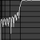
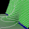
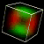
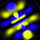
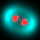
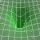

Oscillations and Waves
 |
Ripple Tank (2-D Waves) Applet
Ripple tank simulation that demonstrates wave motion, interference, diffraction, refraction, Doppler effect, etc. |
|
2-D Waves Applet
Demonstration of wave motion in 2-D. |
|
 |
3-D Waves Applet
Demonstration of wave motion in 3-D. |
|
Coupled Oscillations Applet
Demonstration of longitudinal wave motion in oscillators connected by springs. |
|
|
Dispersion Applet
Dispersion and group velocity. |
Acoustics
 |
Loaded String Applet
Simulation of wave motion of a string. |
|
Rectangular Membrane Waves Applet
Vibrational modes in a 2-d membrane. |
|
 |
Circular Membrane Waves Applet
Vibrational modes in a 2-d circular membrane (drum head). |
|
Bar Waves Applet
Bending waves in a bar. |
|
|
Box Modes Applet
Acoustic standing waves in a 3-d box. |
|
|
Acoustic Interference Applet
Generates audio interference between your speakers. |
Signal Processing
|
Fourier Series Applet
Frequency analysis of periodic functions. |
|
|  |
Digital Filters Filters digital signals and plays the output on your speakers. |
Electricity and Magnetism: Statics
|
2-D Electrostatics Applet
Demonstrates static electric fields and steady-state current distributions. |
|
|  |
2-D Electrostatic Fields Applet
Demonstrates electric fields in various 2-D situations; also shows Gauss's law. |
 |
3-D Electrostatic Fields Applet
Demonstrates electric fields in various 3-D situations. |
|
3-D Magnetostatic Fields Applet
Demonstrates magnetic fields in various situations. |
Electrodynamics
|
2-D Electrodynamics Applet (TE)
Demonstrates electromagnetic radiation. |
|
|
2-D Electrodynamics Applet (TM)
Demonstrates electromagnetic radiation, induction, and magnetostatics. |
|
 |
Analog Circuit Simulator Applet
Demonstrates various electronic circuits. |
|  |
Cavity Modes Applet
Electromagnetic waves in a 3-d rectangular cavity. |
|
Waveguide Modes Applet
Electromagnetic waves in a waveguide. |
|
 |
Antenna Applet
Generates antenna radiation patterns. |
|
Fresnel Diffraction Applet
Generates Fresnel diffraction patterns. |
Quantum Mechanics
|  |
Hydrogen Atom Applet
Shows the orbitals (wave functions) of the hydrogen atom. |
|  |
Molecular Orbitals Applet
Shows the orbitals (wave functions) of the hydrogen molecular ion. |
|
1-D Quantum Mechanics Applet
Single-particle quantum mechanics states in one dimension. |
|
|
1-D Quantum Crystal Applet
Periodic potentials in one dimension. |
|
|
2-D Quantum Crystal Applet
Periodic potentials in two dimensions. |
|
 |
1-D Quantum Transitions Applet
Radiative transitions (absorption and stimulated emission) in one dimension. |
|
Atomic Dipole Transitions Applet
Radiative transitions (absorption and stimulated emission) in atoms. |
|
 |
2-D Rectangular Square Well Applet
Rectangular square well (particle in a box) in two dimensions. |
|
2-D Circular Square Well Applet
Circular square well in two dimensions. |
|
 |
2-D Quantum Harmonic Oscillator Applet
Harmonic oscillator in two dimensions. |
|
Quantum Rigid Rotator Applet
Particle confined to the surface of a sphere. |
|
|
3-D Quantum Harmonic Oscillator Applet
Harmonic oscillator in three dimensions. |
Linear Algebra
|
Dot Product Applet
Demonstrates the dot product or scalar product of two vectors. |
|
 |
Matrix Applet
Demonstrates 2-d transformations using a matrix. |
Vector Calculus
|  |
2-D Vector Fields Applet
Demonstrates various properties of vector fields, including divergence and curl, etc. |
 |
3-D Vector Fields Applet
Demonstrates vector fields in 3 dimensions. Includes the Lorenz Attractor and Rossler Attractor. |
Thermodynamics
Gas Molecules Simulation Applet
 Demonstrates the kinetic theory of gases. |
|
 |
Thermal Camera Pictures
Some sample pictures taken with a thermal (infrared) camera. (This is not an applet but I thought I'd throw it in here anyway.) |
Miscellaneous
 |
A Sense of Scale
Provides a visual comparison of various distances, from very small objects like protons and electrons, to distances between galaxies. (Not an applet, but I thought I'd include it here anyway.) |
 |
Ordinary Differential Equations Applet
Visual differential equation solver. |
 |
Euler's Equation Applet
Demonstrates Taylor series expansion of complex exponentials. |
Links to other educational sites with math/physics-related information or java applets useful for teaching:
-
Particle World
-
Physlets
-
Resonata - A Wave Machine
-
Lissajous Lab
-
Flows of Vector Fields
-
A Complex Mapping Viewer
-
Teslamania
-
Dean Dauger's Home Page
-
Wondermagnet.com
-
Powers of 10 Applet
-
Another Kinetic Theory Applet
-
Another Fresnel Diffraction Applet
-
Another Slit Diffraction Applet
-
Acoustics and Vibration Animations
-
Animations of Physical Processes
-
Quantum Mechanical Scattering
-
Forced Oscillations (Resonance)
-
Field of a Moving Point Charge
-
Harmonic Phasors and Fourier Series
-
MyPhysicsLab Simulations
-
Physics 2000
-
Earth-Moon Distance
-
An Atlas of the Universe
-
Finding the Speed of Light with Marshmallows
-
Sky Chart
-
Snowflakes
-
Errors and Misconceptions
-
Sound Lab
-
Wave Packets in Classical Limit
-
Diagrams for Interactive Learning
-
Funny Cartoon
And when you get tired of learning, here is some fun stuff:
-
Java Pong Applet
a cute little pong game I wrote a while ago. -
Java Maze Applet
3d perspective maze. -
Acorn Envelope Applet
Cool videogame sounds.